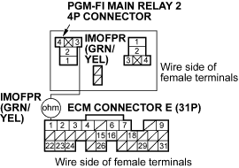

- Check for continuity between the PGM-FI main relay 2 4P connector terminal No. 3 and ECM connector terminal E1.

Is there continuity?
YES - Go to step 9.
NO - Repair open in the wire between the PGM-FI main relay 2 and the ECM (E1). 
- Reinstall the PGM-FI main relay 2.
- Turn the ignition switch ON (II).
- Measure voltage between ECM connector terminal E1 and body ground.
ECM CONNECTOR E (31P)

Wire side of female terminals
Is there battery voltage?
YES - Go to step 12.
NO - Replace the PGM-FI main relay 2.
- Turn the ignition switch OFF.
- Reconnect ECM connector E (31P).

- Turn the ignition switch ON (II), and measure voltage between ECM connector terminal E1 and body ground within the first 2 seconds after the ignition switch was turned ON (II).
ECM CONNECTOR E (31P)

Wire side of female terminals
Is there battery voltage?
YES - Substitute a known-good ECM and recheck (see page 11-5). If symptom/indication goes away, replace the original ECM.
NO - Go to step 15.
- Turn the ignition switch OFF.
- Remove the rear seat cushion, refer to the 2001 Civic 3-door Shop Manual (see page 20-40).
- Remove the access panel from the floor.
- Measure voltage between the fuel pump 5P connector terminal No. 5 and body ground within the first 2 seconds after the ignition switch was turned ON (II).
FUEL PUMP 5P CONNECTOR

Wire side of female terminals
Is there battery voltage?
YES - Go to step 24.
NO - Go to step 19.